import matplotlib.pyplot as plt
import numpy as np
X = np.arange(0, 10)
Y = np.array([20, 25, 35, 50, 10, 12, 20, 40, 70, 110])
plt.plot(X, Y)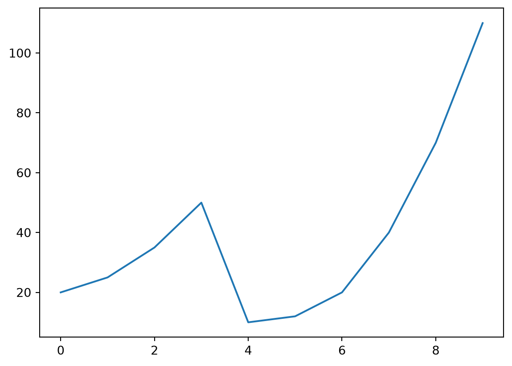
matplotlib.pylabpylab is outdated interface for Matplotlibmatplotlib.pyplotpyplot is the conventional interface for Matplotlib
By convention it is imported at plt
import matplotlib.pyplot as pltpyplot interface can either be used implicitly or explicitly
plt.plot is used to plot \(x\) vs \(y\) dataimport matplotlib.pyplot as plt
import numpy as np
X = np.arange(0, 10)
Y = np.array([20, 25, 35, 50, 10, 12, 20, 40, 70, 110])
plt.plot(X, Y)
matplotlib.Line2D class
plt.plotmarker
Defines special markers that indicate plotted points
Large number of options
| marker | Description |
|---|---|
| . | point |
| , | pixel |
| o | circle |
| v | upside down triangle |
| ^ | up triangle |
| < | left triangle |
| > | right triangle |
| 1 | tri marker (down) |
| 2 | tri marker (up) |
| 3 | tri marker (left) |
| 4 | tri marker (right) |
| s | square |
| p | pentagon |
| * | star |
| h | hexagon |
| H | hexagon (alternative) |
| + | plus |
| D | diamond |
| d | thin diamond |
| | | vertical line |
| _ | horizontal line |
linestyle
Defines how the line is styled
| linestyle | Description |
|---|---|
| - | solid line |
| – | dashed line |
| -. | dash dot line |
| : | dotted line |
| None or empty string | no line |
color
Colours the line
There are simple alias for common colours
| color | Description |
|---|---|
| b | blue |
| g | green |
| r | red |
| c | cyan |
| m | magenta |
| y | yellow |
| k | black |
| w | white |
import matplotlib.pyplot as plt
import numpy as np
X = np.arange(0, 10)
Y = np.array([20, 25, 35, 50, 10, 12, 20, 40, 70, 110])
plt.plot(X, Y, marker="s", linestyle="-.", color="m")
fmt positional argument
[marker][linestyle][color]fmt string for above is s-.mplot after the \(x\) and \(y\) dataimport matplotlib.pyplot as plt
import numpy as np
X = np.arange(0, 10)
Y = np.array([20, 25, 35, 50, 10, 12, 20, 40, 70, 110])
plt.plot(X, Y, "s-.m")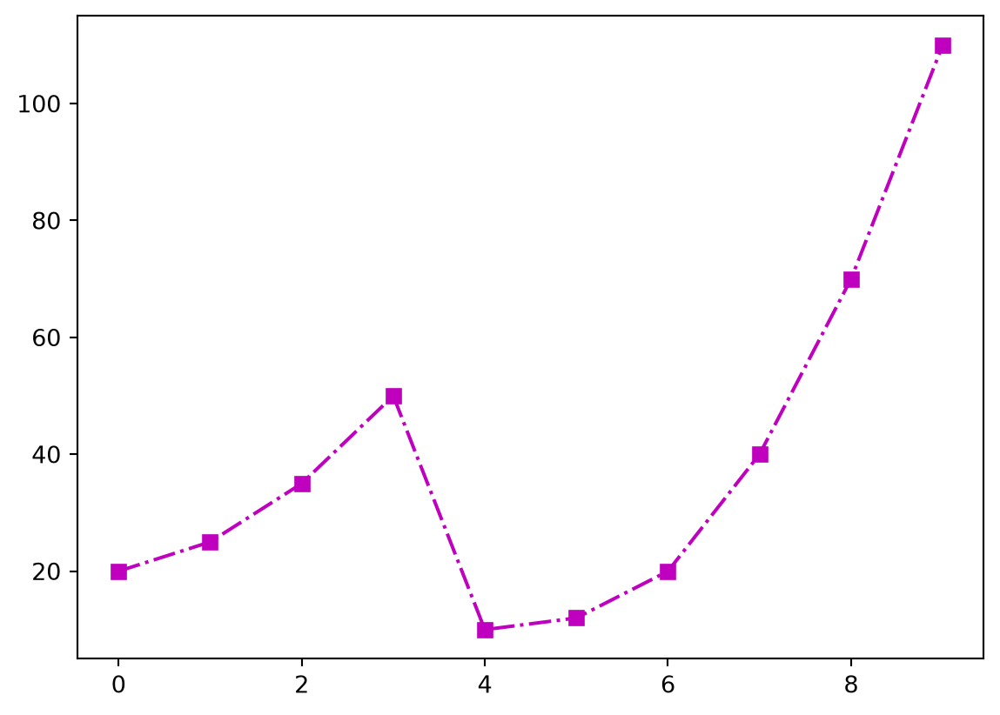
import matplotlib.pyplot as plt
import numpy as np
X = np.arange(0, 10)
Y = np.array([20, 25, 35, 50, 10, 12, 20, 40, 70, 110])
plt.plot(X, Y, "s--r", linewidth=4.3)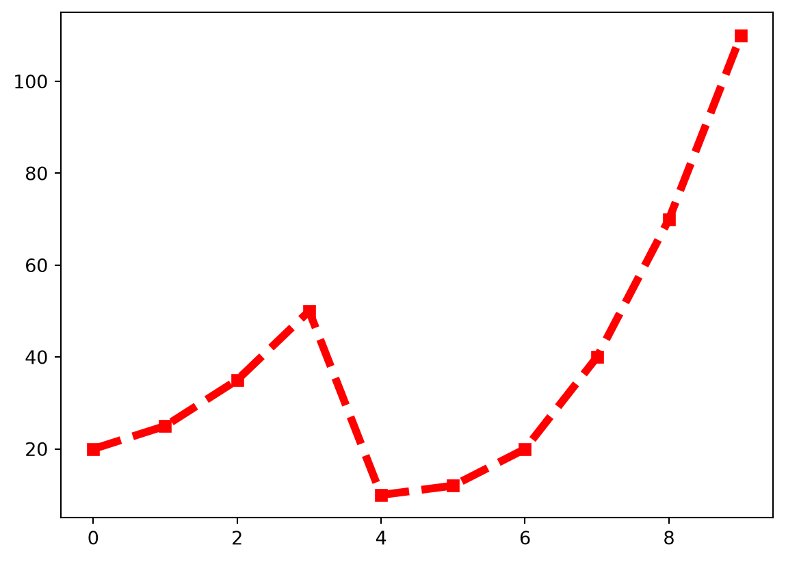
matplotlib works with labelled data
import matplotlib.pyplot as plt
import pandas as pd
data = {
"Years": ["2000", "2002", "2004", "2006", "2008", "2010", "2012", "2014", "2016"],
"Men": [189.1, 191.8, 193.5, 196.0, 194.7, 196.3, 194.4, 197.0, 197.8],
"Women": [175.5, 176.4, 176.5, 176.2, 175.9, 175.9, 175.7, 175.8, 175.3],
}
heights_df = pd.DataFrame(data)
plt.plot("Years", "Women", data=heights_df)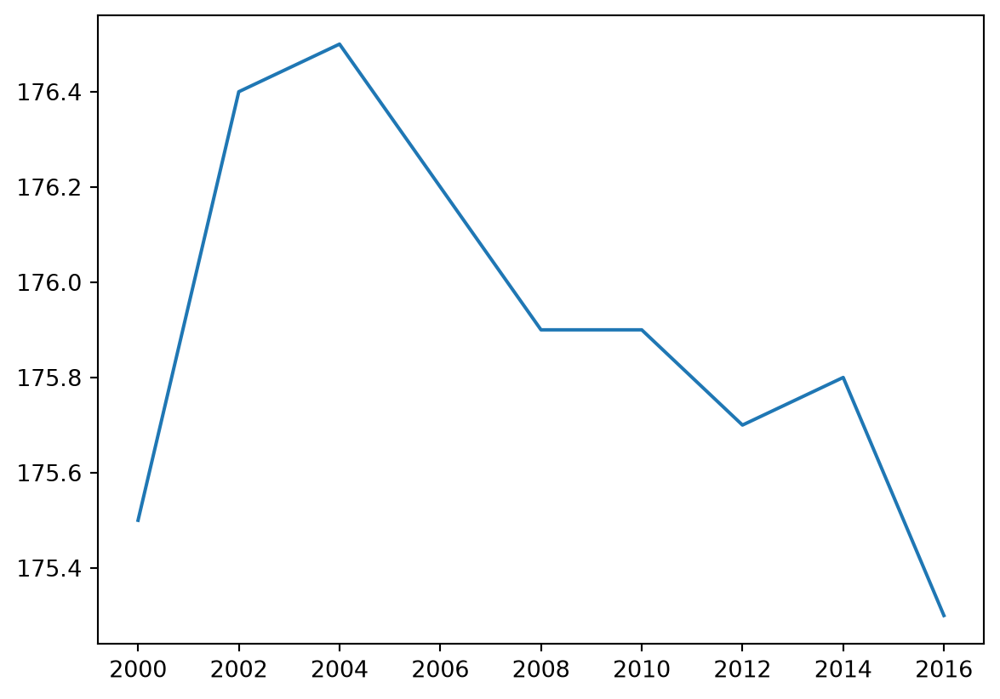
data parameterplot multiple timesimport matplotlib.pyplot as plt
import numpy as np
X_1 = np.arange(0, 10)
Y_1 = np.array([20, 25, 35, 50, 10, 12, 20, 40, 70, 110])
fmt = "s-.r"
X_2 = np.arange(0, 10)
Y_2 = np.array([90, 89, 87, 82, 72, 60, 45, 28, 10, 0])
fmt2 = "^:k"
plt.plot(X_1, Y_1, fmt)
plt.plot(X_2, Y_2, fmt2)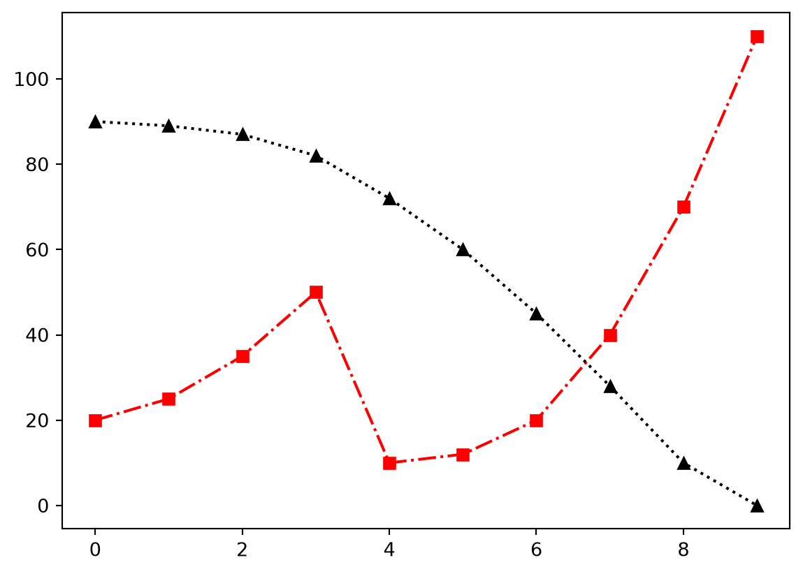
plot defaults to the current figure and axes
fmt sequentially)import matplotlib.pyplot as plt
import numpy as np
X_1 = np.arange(0, 10)
Y_1 = np.array([20, 25, 35, 50, 10, 12, 20, 40, 70, 110])
fmt = "s-.r"
X_2 = np.arange(0, 10)
Y_2 = np.array([90, 89, 87, 82, 72, 60, 45, 28, 10, 0])
fmt2 = "^:k"
plt.plot(X_1, Y_1, fmt, X_2, Y_2, fmt2)
import matplotlib.pyplot as plt
import pandas as pd
data = {
"Years": ["2000", "2002", "2004", "2006", "2008", "2010", "2012", "2014", "2016"],
"Men": [189.1, 191.8, 193.5, 196.0, 194.7, 196.3, 194.4, 197.0, 197.8],
"Women": [175.5, 176.4, 176.5, 176.2, 175.9, 175.9, 175.7, 175.8, 175.3],
}
heights_df = pd.DataFrame(data)
plt.plot("Years", "Women", "Men", data=heights_df)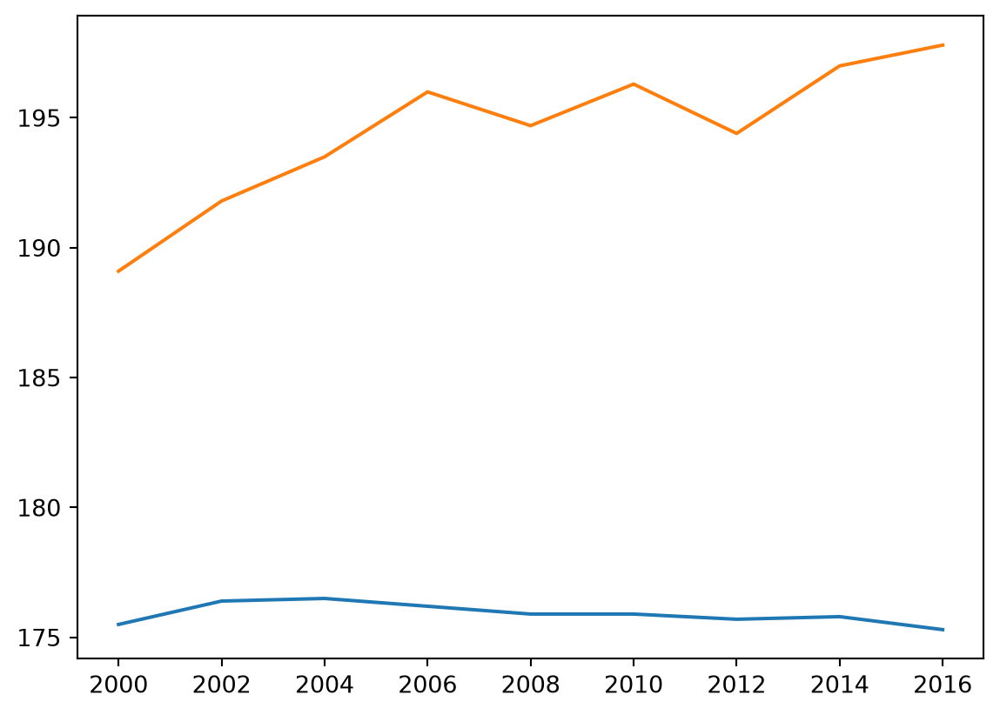
pyplot provides simple convenience functions for adding labels, titles and legendsplot these applyt to the current figure and axesimport matplotlib.pyplot as plt
import pandas as pd
data = {
"Years": ["2000", "2002", "2004", "2006", "2008", "2010", "2012", "2014", "2016"],
"Men": [189.1, 191.8, 193.5, 196.0, 194.7, 196.3, 194.4, 197.0, 197.8],
"Women": [175.5, 176.4, 176.5, 176.2, 175.9, 175.9, 175.7, 175.8, 175.3],
}
heights_df = pd.DataFrame(data)
plt.plot("Years", "Women", "Men", data=heights_df)
plt.xlabel("Year")
plt.ylabel("Height (Inches)")
plt.title("Average Height over Time")
plt.legend(["Women", "Men"])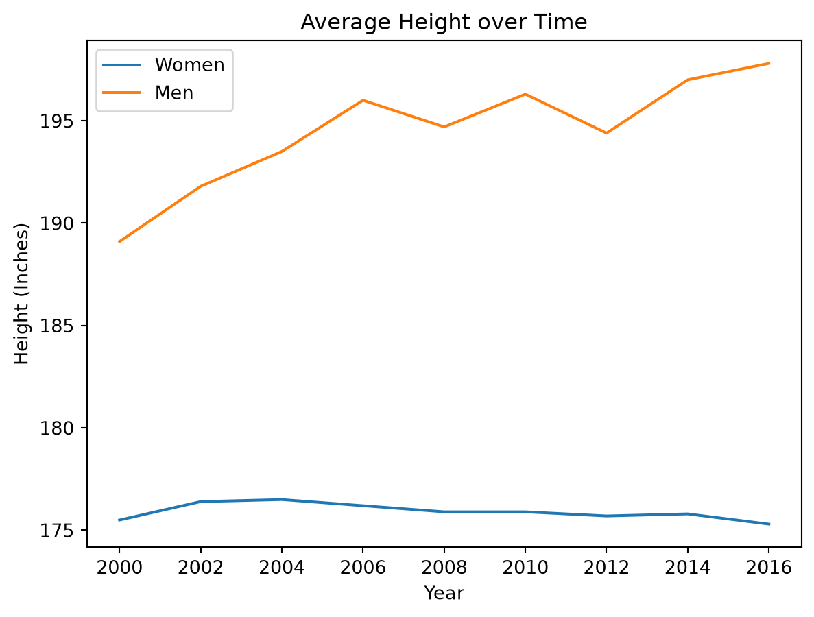
pyplot functions like pyplot.subplots
import matplotlib.pyplot as plt
import pandas as pd
data = {
"Years": ["2000", "2002", "2004", "2006", "2008", "2010", "2012", "2014", "2016"],
"Men": [189.1, 191.8, 193.5, 196.0, 194.7, 196.3, 194.4, 197.0, 197.8],
"Women": [175.5, 176.4, 176.5, 176.2, 175.9, 175.9, 175.7, 175.8, 175.3],
}
heights_df = pd.DataFrame(data)
# Get one figure and axis
fig, ax = plt.subplots()
ax.plot("Years", "Women", "Men", data=heights_df)
ax.set_xlabel("Year")
ax.set_ylabel("Height (Inches)")
ax.set_title("Heights over time")
ax.legend(["Women", "Men"])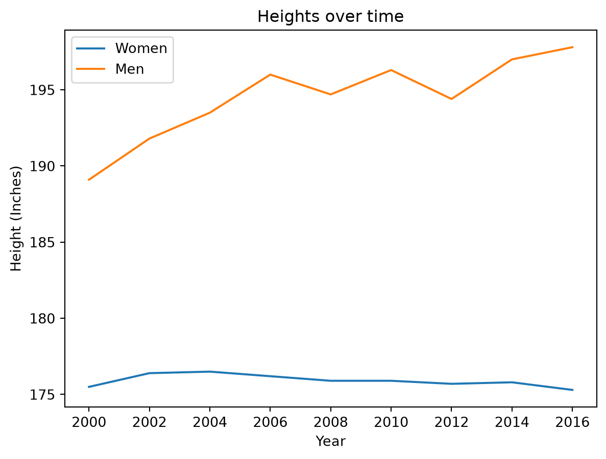
plt.subplots, specify the shape of the plot in terms of the number of rows, then columnsimport matplotlib.pyplot as plt
import pandas as pd
data = {
"Years": ["2000", "2002", "2004", "2006", "2008", "2010", "2012", "2014", "2016"],
"Men": [189.1, 191.8, 193.5, 196.0, 194.7, 196.3, 194.4, 197.0, 197.8],
"Women": [175.5, 176.4, 176.5, 176.2, 175.9, 175.9, 175.7, 175.8, 175.3],
}
heights_df = pd.DataFrame(data)
fig, (ax1, ax2) = plt.subplots(1, 2) # Create a figure with 1 row and 2 columns
ax1.plot("Years", "Women", data=heights_df)
ax1.set_xlabel("Year")
ax1.set_ylabel("Height (Inches)")
ax1.set_title("Women")
ax1.legend(["Women"])
ax2.plot("Years", "Men", data=heights_df)
ax2.set_xlabel("Year")
ax2.set_title("Men")
ax2.legend(["Men"])
fig.autofmt_xdate(rotation=65) # Rotate data labels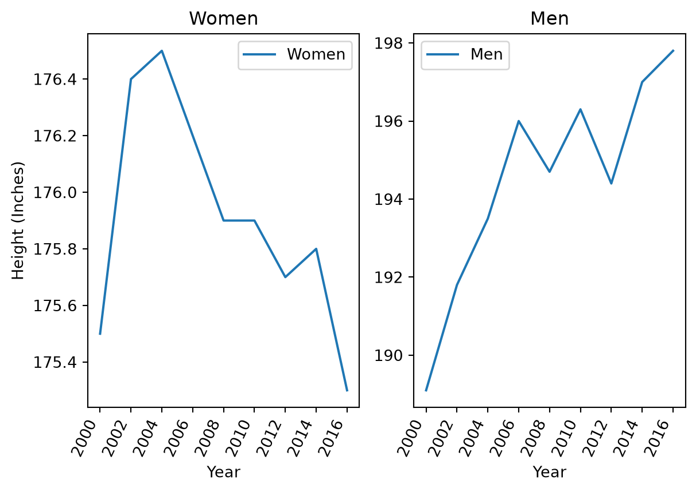
Seaborn is a statistical plotting library
By convention Seaborn is imported as sns
import seaborn as snsSeaborn comes with some built-in datasets
Datasets are designed to be loaded as Pandas dataframes
For example, plotting some data from the car crashes dataset
relplotimport seaborn as sns
car_crashes = sns.load_dataset("car_crashes")
car_crashes = car_crashes[["total", "not_distracted", "alcohol"]] #filtering the dataframe
sns.relplot(data=car_crashes, x="total", y="not_distracted")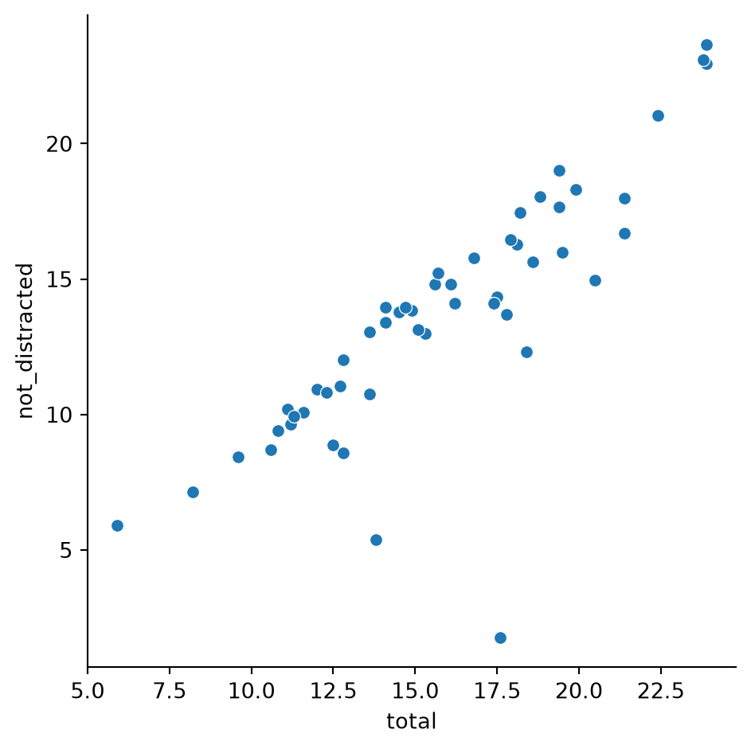
Seaborn bundles a number of themes that control how plots are styled
The default is set via
sns.set_theme()We can repeat our previous plot to see the style of this theme
import seaborn as sns
sns.set_theme()
car_crashes = sns.load_dataset("car_crashes")
car_crashes = car_crashes[
["total", "not_distracted", "alcohol"]
] # filtering the dataframe
sns.relplot(data=car_crashes, x="total", y="not_distracted")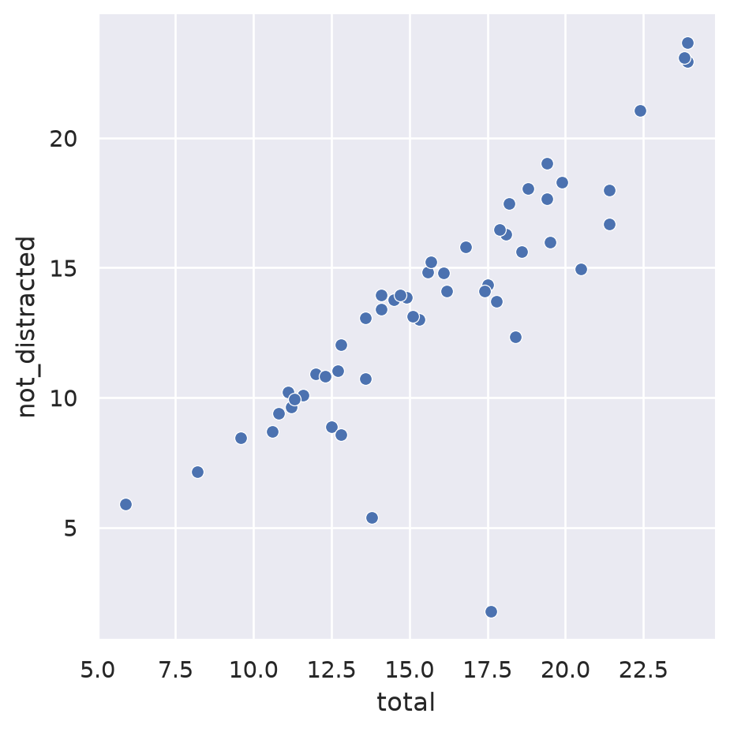
A seaborn theme changes a bunch of parameters behind the scenes
The theme thus applied to any subsequent seaborn themes
Seaborn breaks down formatting a chart into two types of parameters
Seaborn also defines a number of styles that can be set
There are five included by default
darkgridwhitegriddarkwhiteticksStyle is then set by sns.set_style
For example, using the dark style
import seaborn as sns
sns.set_style("dark")
car_crashes = sns.load_dataset("car_crashes")
car_crashes = car_crashes[
["total", "not_distracted", "alcohol"]
] # filtering the dataframe
sns.relplot(data=car_crashes, x="total", y="not_distracted")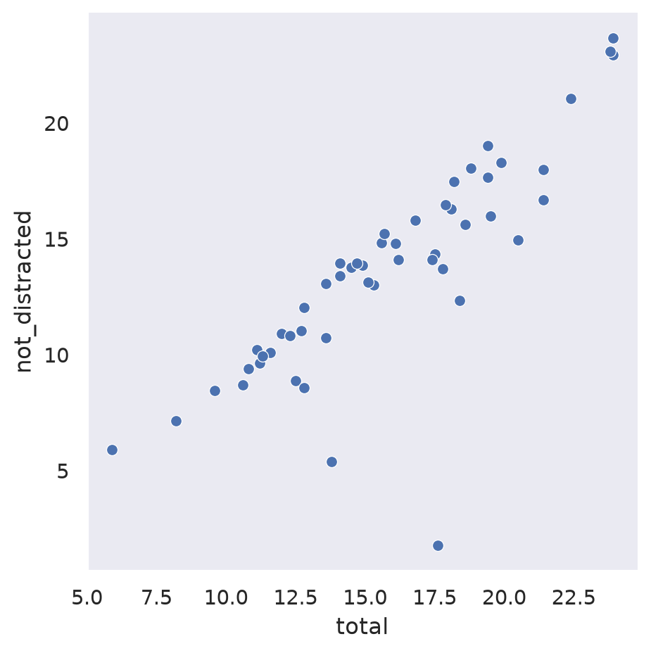
Setting the scale is designed to target specific presentation styles. The defaults are
papernotebooktalkposterThe scale theme can be set via the set_context instructions
import seaborn as sns
sns.set_context("talk")
car_crashes = sns.load_dataset("car_crashes")
car_crashes = car_crashes[
["total", "not_distracted", "alcohol"]
] # filtering the dataframe
sns.relplot(data=car_crashes, x="total", y="not_distracted")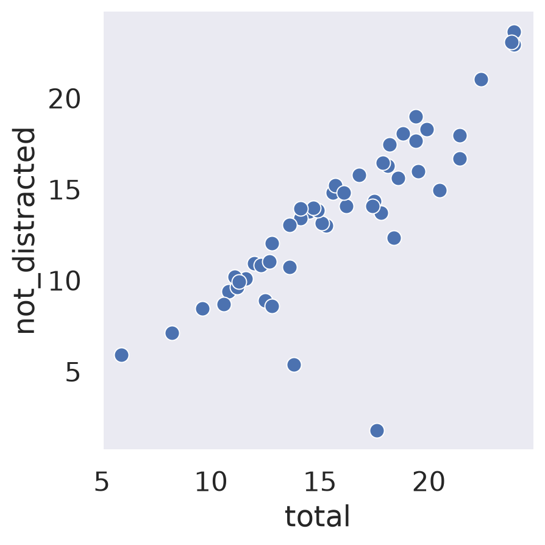
pairplot
import seaborn as sns
df = sns.load_dataset("iris")
sns.pairplot(df, hue="species")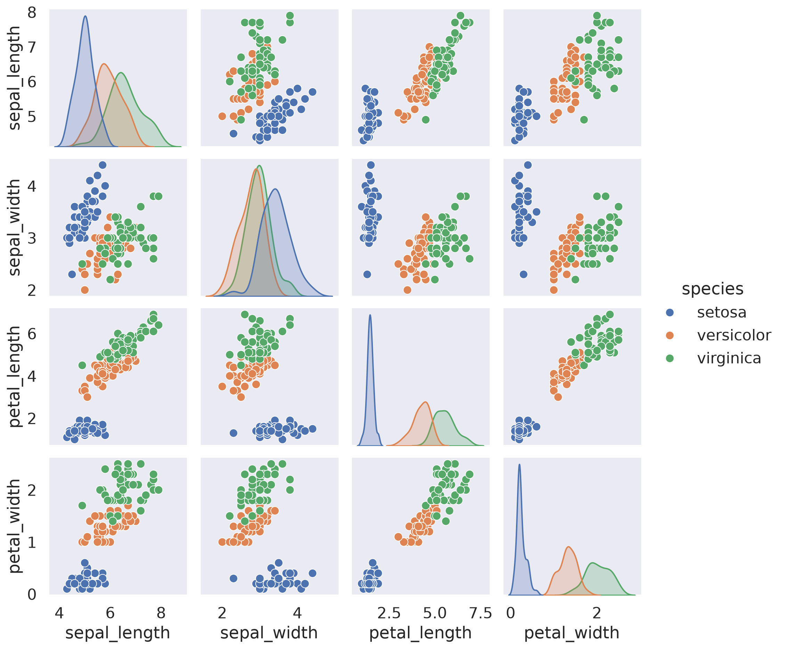
import plotly.express as px
iris = px.data.iris()
fig = px.scatter_3d(
iris, x="sepal_length", y="petal_width", z="petal_length", color="species"
)
fig.show()ColumnDataSource classfrom bokeh.io import output_notebook
from bokeh.plotting import figure, show
from bokeh.models import ColumnDataSource
from bokeh.layouts import gridplot
output_notebook()
Y_1 = [x for x in range(0, 200, 2)]
Y_2 = [x**2 for x in Y_1]
X = [x for x in range(100)]
data = {"x": X, "y1": Y_1, "y2": Y_2} # create data
TOOLS = "box_select" # select interactive tools
source = ColumnDataSource(data=data) # Create data model
left = figure(tools=TOOLS, title="Brushing") # Create figure using the selected tools
left.circle(
"x", "y1", radius=0.5, source=source
) # Create a circle plot on the first figure
right = figure(
tools=TOOLS, title="Brushing"
) # Create a second figure using the selected tools
right.circle(
"x", "y2", radius=0.5, source=source
) # Create a circle plot on the second figure
p = gridplot([[left, right]]) # Put the figures on a grid
show(p) # Show the gridThere are a range of other visualisation suites available
Most cater to specific domains or data regimes
geoplotlib
ggplot
pygal
folium
missingno
matplotlib is the plotting library as part of the Scipy suite
seaborn is a statistics visualisation library built on matplotlib
Plotly and Bokeh are other plotting engines designed for creating more interactive visualisations
Use the following example to answer the following questions
import matplotlib.pyplot as plt
import seaborn as sns
import pandas as pd
data = {
"X": [x for x in range(50)],
"Y": [y for y in range(50, 0, -1)],
"Y1": [y**2 for y in range(25, 75)]
}
df = pd.DataFrame(data)matplotlib to plot the relationship between column X and column Y
matplotlib to plot the relationship between column X and column Y1 to the same plot
matplotlib to plot the relationship betweeen the relationships from Question 1 and Question 2 on seperate axes of the same figure
seaborn to change the theme to darkgrid and then repeat the plots from Question 3import matplotlib.pyplot as plt
import seaborn as sns
import pandas as pd
data = {
"X": [x for x in range(50)],
"Y": [y for y in range(50, 0, -1)],
"Y1": [y**2 for y in range(25, 75)],
}
df = pd.DataFrame(data)
print("Question 1")
plt.plot("X", "Y", data=data)
plt.xlabel("X")
plt.ylabel("Y")Question 1Text(0, 0.5, 'Y')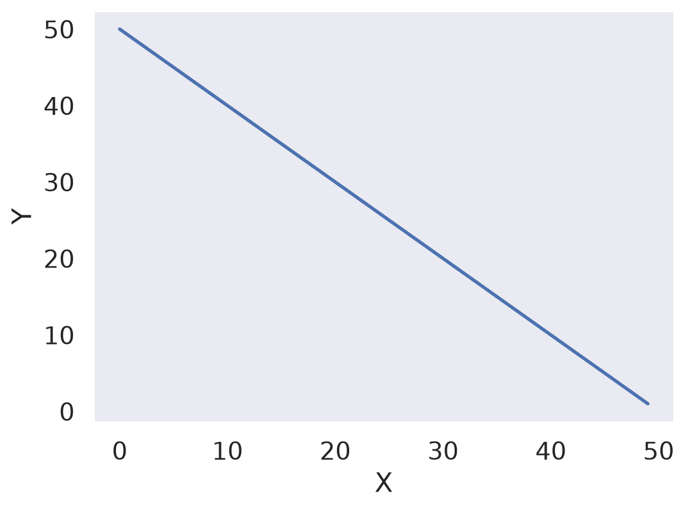
import matplotlib.pyplot as plt
import seaborn as sns
import pandas as pd
data = {
"X": [x for x in range(50)],
"Y": [y for y in range(50, 0, -1)],
"Y1": [y**2 for y in range(25, 75)],
}
df = pd.DataFrame(data)
print("Question 2")
plt.plot("X", "Y", "Y1", data=data)
plt.xlabel("X")
plt.legend(["Y", "Y1"])Question 2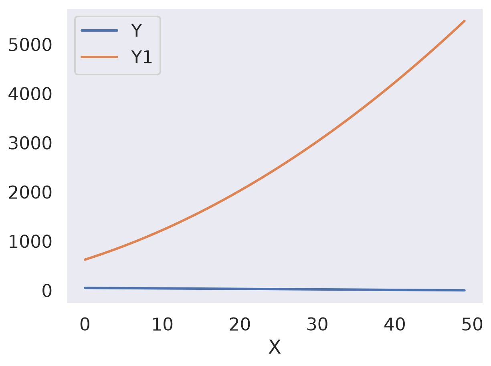
import matplotlib.pyplot as plt
import seaborn as sns
import pandas as pd
data = {
"X": [x for x in range(50)],
"Y": [y for y in range(50, 0, -1)],
"Y1": [y**2 for y in range(25, 75)],
}
df = pd.DataFrame(data)
print("Question 3")
fig, (ax1, ax2) = plt.subplots(1, 2)
ax1.plot("X", "Y", data=data)
ax1.set_xlabel("X")
ax1.set_ylabel("Y")
ax2.plot("X", "Y1", data=data)
ax2.set_xlabel("X")
ax2.set_ylabel("Y")Question 3Text(0, 0.5, 'Y')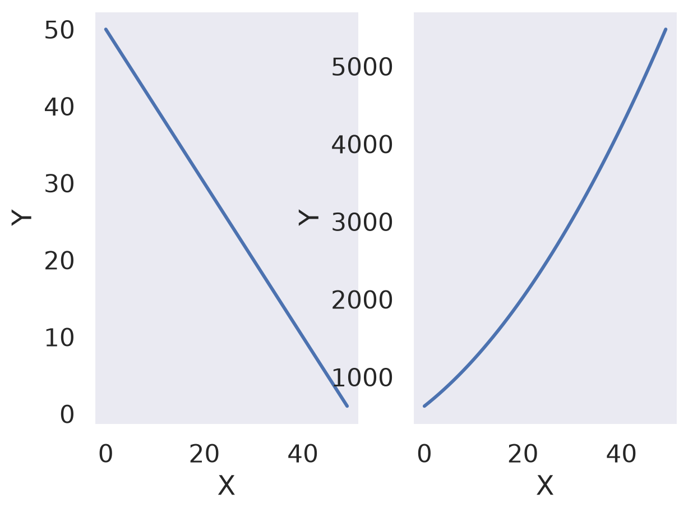
import matplotlib.pyplot as plt
import seaborn as sns
import pandas as pd
data = {
"X": [x for x in range(50)],
"Y": [y for y in range(50, 0, -1)],
"Y1": [y**2 for y in range(25, 75)],
}
df = pd.DataFrame(data)
print("Question 4")
sns.set_style("darkgrid")
fig, (ax1, ax2) = plt.subplots(1, 2)
ax1.plot("X", "Y", data=data)
ax1.set_xlabel("X")
ax1.set_ylabel("Y")
ax2.plot("X", "Y1", data=data)
ax2.set_xlabel("X")
ax2.set_ylabel("Y")Question 4Text(0, 0.5, 'Y')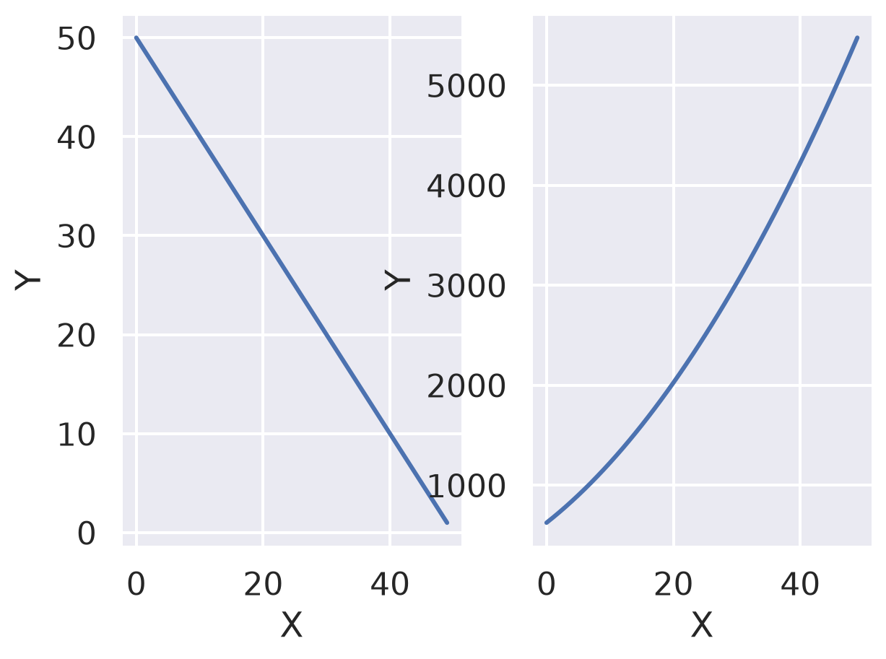